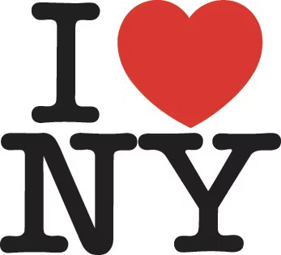

The Designer as Scribe
Tablets were small, often no more than ten centimetres wide. These documents were issued, traded, and therefore owned. Communication as a form of property was contrary to the oral culture of early primitive societies, which was a shared form of communication, as researcher and author Seth Siegelaub notes.
Whether these documents are kept in warehouses or on servers, Lisa Gitelman reminds us that even if these documents are never seen, their primary function is to serve as silent witnesses that can be summoned when needed.
Financial documents are designed to look trustworthy by using style of writing or typography that is consistent, legible, and official.
In early Mesopotamia the destroying of financial records was actually a celebratory event. The New Year festivities in Babylon included 'the breaking of tablets'. An annual ritual to wipe debts clean and literally start with a clean slate.
The Designer as Engineer
Now found on every imaginable product, the bar code was invented by engineer Joe Woodland when he was a graduate student in the US in 1952. Woodland was inspired by Morse code, and as he was sitting on Miami Beach, he drew his fingers in the sand and came up with the idea that the stripes could be thick or thin.
While economic efficiency is undoubtedly the main achievement of the bar code, the collection of consumer data is its most important legacy.
Thanks to Gutenberg's invention, books could now be published in local languages, but not all languages were regarded equally. Those picked for publications depended on where printers were based, and where the centres of power were located.
Official surnames were an administrative invention. Apart from a few wealthy lords with family lineages, surnames did not exist prior to the seventeenth century.
Early forms of information graphics - or data graphics - were drawn by scientists and engineers. The first information graphics can be traced as far back as ancient Mesopotamia where mathematicians used drawings on clay tablets to explain geometry. For centuries scientific knowledge was mostly documented and shared through written text. Johanna Drucker suggests that such as the microscope by the end of sixteenth century helped to further the conception that science could be visual, from the scientific method of observation.
Colonial voyages were risky and only possible through the investment from bankers and merchants. The stock that was traded on the first stock markets in Amsterdam and London were almost exclusively of the Dutch East India Company and the British East India Company. To safeguard their investments, investors received detailed reports with maps showing their new possessions. Documents convincing them colonial ventures were profitable.
The printing press was essential for reproducing maps of these newly acquired lands. More than navigational aids, they represented the fruits of colonialisation, convincing investors and the public that the enormous costs were justified, while demonstrating European superiority.
In precolonial times, European mapmakers had the habit of drawing dragons and octopuses at the edges to warn against falling off the earth's flat surface. When the first rumours of the existence of a new world spread, these monsters were replaced by natives that were thought to inhabit it. [...] These wild imaginations were a precursor of how Europeans would morally defend the genocide that they unleashed on the native inhabitants.
This follows from the famous quote 'a map is not the territory' by engineer and mathematician Alfred Korzybski. By this he meant that people often mistake a model of reality for reality itself. In other words, it is often assumed that maps offer a complete or at least sufficient representation reality, while in fact they only show what the person who made it wants you to see.
The Designer as Brander
Yuval Noah Harari mentions sociological research that suggests groups of up to about 150 individuals can exist without symbolic representation. Once a group becomes larger, stories and myths are necessary to establish a social order.
The word branding comes from the ancient Norse word brandr, meaning 'to burn'. One way of marking property was by burning a symbol into the hide of an animal, using a wooden torch called a brand. [...] Enslaved peoples were branded with a hot iron on the forehead, breast, or arm. The horrifying act of burning an owner's logo into a person as branding is understood by author and educator Simone Browne as both a technology for marketing and for torture.
One of the strategies to instil a familiar feeling onto lifeless industrial products was to invent fictional persons. [...] A lot of these early advertising ideas can still be found today, as brands create brand personalities as a substitute for human relationships.
To a large extent, the workers who actually assemble or make the products have no influence on how these are communicated and branded. This is done as far away as possible, to enable designers to develop fictional narratives for the purpose of selling the product independent of its material quality and origin.
The partners of Chermayeff & Geismar - who branded oil companies, banks, and pharmaceutical companies - explain their view on corporate identity design as follows in Printmag: 'When we create a great logo for an environmental organisation, we do not see ourselves as saving the planet. In the same way, we cannot take responsibility for the "evil" actions of corporations we brand.The partners of Chermayeff & Geismar - who branded oil companies, banks, and pharmaceutical companies - explain their view on corporate identity design as follows in Printmag: 'When we create a great logo for an environmental organisation, we do not see ourselves as saving the planet. In the same way, we cannot take responsibility for the "evil" actions of corporations we brand.
Brand personalities were created to fill the void of the absent craftsmen.
For those working within the corporation, especially in the lower echelons, it means a disciplining of behaviour for the sake of a designed image of consistency and efficiency. Why would corporations want to extinguish individual personalities in favour of a single dominating persona? Because the corporations are owned by the stockholders.
Those who have money have the possibility of seeing fewer ads, especially as many free or cheap services have mandatory advertising. [...] They give the example of private banks in Geneva, where the absence of a name on the front door of a private bank implies confidentiality.
The bible of city branding is The Rise of the Creative Class by Richard Florida, in which he proposed that cities should focus on attracting creatives. In his view, creative people attract businesses, which in turn leads to economic growth.

designed by Milton Glaser, 1977
When asked about his logo he said: 'I have to say that when you do something that you really feel is useful - when you have a positive social effect - it makes you feel great.'